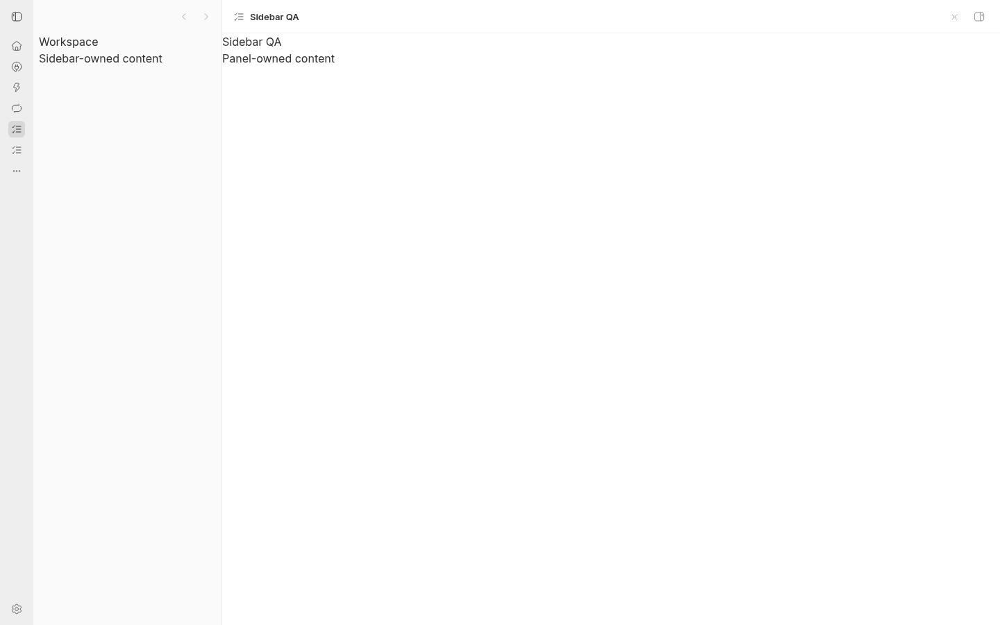
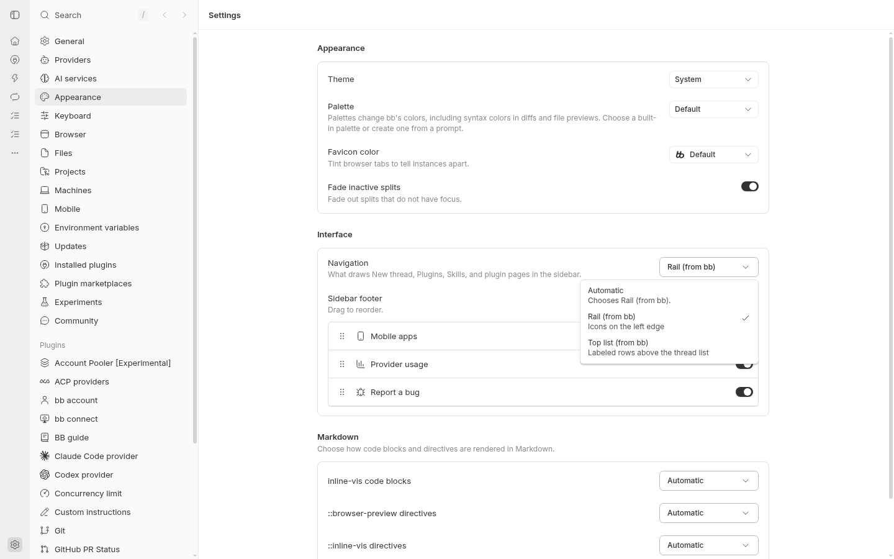
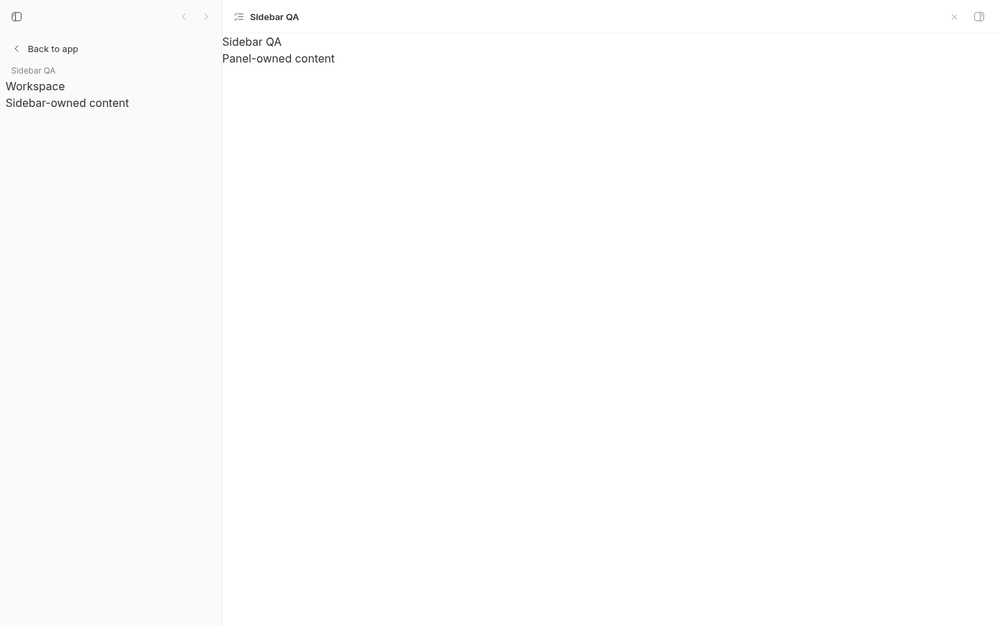
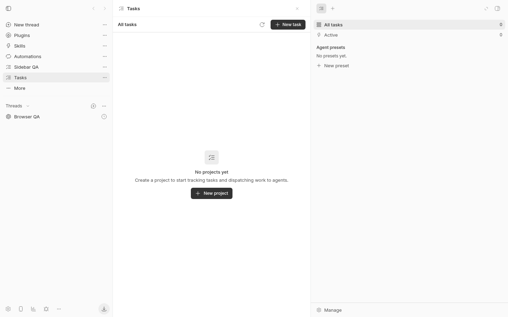

#8209 · Host section label duplicates a plugin panel heading
Verdict: PARTIALLY REPRODUCED · Root-cause confidence: high
1. TL;DR
A plugin that registers the experimental navigation-panel sidebar receives an extra host-drawn title immediately below “Back to app” in Top list navigation. Its panel header already carries that title. A minimal SDK plugin reproduces this in two separately built, unmodified-main checkouts, and the same browser assertion passes in Rail mode. However, the current built-in Tasks page does not register this sidebar hook: its navigation lives in the right panel, so the issue’s Tasks example does not reproduce on the stated base. This report therefore distinguishes a reproduced SDK-hook presentation problem from unverified or outdated built-in examples.
2. Claims vs findings
| Claim | Finding | Evidence |
|---|---|---|
| Top list adds a repeated title for a plugin-owned sidebar. | Verified with an authored minimal plugin. | Both clean runs report one visible host title and one panel heading; screenshots below. |
| Rail does not add that label. | Verified. | The identical browser assertion passes with zero sidebar title labels. |
| Built-in Tasks demonstrates the problem on this base. | Refuted on the checked base. | Tasks registers a fixed right-panel Navigation tab, not experimental_sidebar. Live DOM: pluginSidebarPresent=false, rightPanelPresent=true. |
| Source Control provides another live example. | Unverified. | No built-in experimental_sidebar registration was found in the source search; no Source Control page reproduction is claimed. |
| A plugin can suppress the host title through its sidebar API. | No supported control found. | The registration accepts the sidebar component, but no host-label visibility option. |
| Hiding the visible label must preserve an accessible sidebar name. | Requirement, not existing behavior. | The current host wrapper is a div without aria-label. Both runs return accessibleName=null. |
| Compact/mobile layouts show the same result. | Not exercised. | This investigation verifies desktop Chromium at 1440×900, DPR 1 only. |
3. Environment
- Public repository get-bb/bb; main commit
b0ddaad731565d7e4de68d824120d802fc78f7d5; no production source changes. - Debian 12, Linux 4.19.0-gvisor; Node v22.19.0; Chrome for Testing 158.0.8127.88; DevBrowser 1.0.0-rc.4 through the BB Browser Automation plugin, headless.
- Run A: app 18949, API 26949, host daemon 34949. Fresh checkout-specific development store; no imported or production runtime data.
- Run B: second detached clean temporary worktree at the same commit; app 11712, API 19712, host daemon 27712. Separate newly created development store. Private temporary path suffixes are omitted.
- Each checkout ran the normal frozen install and Turbo build. A first build exposed missing SDK runtime outputs; explicitly building the SDK and its types resolved it, and both full builds then passed (74 tasks each).
- No model turn was executed. A future-scheduled QA thread record only owned the browser session; it was not an investigation agent.
4. Minimal reproduction
Use a clean trusted source checkout and a fresh, nonempty checkout-specific development data directory as described in the repository’s debugging guide. Do not point source tools at a production store. The fixture below has no dependencies and is authored for this investigation from the existing SDK registration contract.
- Prepare and build the trusted source:
git fetch origin main git checkout --detach b0ddaad731565d7e4de68d824120d802fc78f7d5 pnpm install --frozen-lockfile --prefer-offline pnpm exec turbo run build build:types --filter=@get-bb/plugin-sdk pnpm exec turbo run build pnpm dev
Keep the app URL printed by that checkout. Pre-create its fresh development data directory with a marker so legacy data cannot be adopted. - Create the three fixture source files shown below in an otherwise empty temporary directory. From the trusted checkout, in a second terminal, run:
FIXTURE=/tmp/sidebar-qa-fixture pnpm bb:dev plugin build "$FIXTURE" pnpm bb:dev plugin install "$FIXTURE" --yes pnpm bb:dev settings ui set sidebar.navigationProvider navigation/top-list
The installed plugin ID issidebar-qa. No repository package or lockfile is changed. - Open
<checkout app URL>/plugins/sidebar-qa/sidebar-qa/sidebar-qa. The page owns a Sidebar QA header and a Workspace navigation section. Observe the smaller Sidebar QA label between Back to app and Workspace. - Alternatively set Navigation through Settings → Appearance → Navigation → Top list. The captured menu below is from that actual UI action.
- Save the complete browser assertion below as
check-sidebar.jsand run it in a BB Browser Automation session whose named pagemainis on the fixture route. Install the built-in browser-automation plugin on the isolated instance if necessary, and open its explicitly selected local/headless session. Supply that instance’s own QA thread ID and host ID, not production IDs:pnpm bb:dev plugin install builtin:browser-automation --yes pnpm bb:dev browser-automation open --backend local --headless --machine "$QA_HOST" --thread "$QA_THREAD" --json pnpm bb:dev browser-automation run "$SESSION" --thread "$QA_THREAD" --script "$(cat check-sidebar.js)" --json
The QA host needs Chrome installed. The session page is navigated withawait (await browser.getPage("main")).goto(APP_URL + "/plugins/sidebar-qa/sidebar-qa/sidebar-qa")through the same plugin. - Negative control: set
sidebar.navigationProvidertonavigation/rail, revisit the fixture route, and rerun the exact assertion. It passes.
Expected: Sidebar contains only its own Workspace/content below Back to app; zero additional Sidebar QA labels. Actual on both clean Top list runs:
{
"sidebarText": "Back to appSidebar QAWorkspaceSidebar-owned content",
"visibleTitleLabels": 1,
"accessibleName": null,
"panelHeadingCount": 1
}
Error: Expected no repeated sidebar title; received 1
Browser run exitCode: 1. Rail control: visibleTitleLabels=0, panelHeadingCount=1, exitCode 0.




Complete fixture sources
package.json:
{
"name": "bb-plugin-sidebar-qa",
"version": "0.0.1",
"type": "module",
"bb": {
"name": "Sidebar QA",
"description": "Isolated sidebar contract reproduction",
"branding": { "icon": "ListTodo" },
"app": "./app.tsx",
"server": "./server.ts"
}
}
server.ts:
import type { BbPluginApi } from "@get-bb/plugin-sdk";
export default function sidebarQa(_bb: BbPluginApi) {}
app.tsx:
import { definePluginApp } from "@get-bb/plugin-sdk/app";
function SidebarContent() {
return <nav aria-label="Fixture navigation"><h2>Workspace</h2><p>Sidebar-owned content</p></nav>;
}
function PanelContent() {
return <main><h1>Sidebar QA</h1><p>Panel-owned content</p></main>;
}
export default definePluginApp((app) => {
app.slots.navPanel({
id: "sidebar-qa",
title: "Sidebar QA",
icon: "ListTodo",
path: "sidebar-qa",
component: PanelContent,
experimental_sidebar: SidebarContent,
});
});
Complete browser regression assertion
const page = await browser.getPage("main");
await page.waitForSelector('[data-testid="plugin-sidebar-body"] nav[aria-label="Fixture navigation"]');
const actual = await page.evaluate(() => {
const sidebar = document.querySelector('[data-testid="plugin-sidebar-body"]');
const titleLabels = [...sidebar.querySelectorAll("*")].filter(
element => element.childElementCount === 0 &&
element.textContent === "Sidebar QA" &&
element.getBoundingClientRect().height > 0,
);
return {
sidebarText: sidebar.textContent,
visibleTitleLabels: titleLabels.length,
accessibleName: sidebar.getAttribute("aria-label"),
panelHeadingCount: [...document.querySelectorAll("h1")].filter(
element => element.textContent === "Sidebar QA",
).length,
};
});
console.log(JSON.stringify(actual, null, 2));
if (actual.panelHeadingCount !== 1) throw new Error("Fixture panel did not render");
if (actual.visibleTitleLabels !== 0) {
throw new Error(`Expected no repeated sidebar title; received ${actual.visibleTitleLabels}`);
}
5. Root cause
pluginPanelRouteSidebar wraps any registered experimental sidebar in the same SectionSidebar component used by core sections and passes the panel title unchanged:
<SectionSidebar title={panel.title} testIdPrefix="plugin" {...props}>
SectionSidebar treats a non-null back route as sufficient reason to render both the Back to app row and a visible title:
{backTo === null ? null : (
<SectionSidebarLabel>{title}</SectionSidebarLabel>
)}
This condition has no distinction between a core section label and a plugin sidebar that owns its navigation hierarchy. Rail uses a null back route and skips the label. The wrapper is also an unnamed div, so simply deleting the visible text would not preserve a region name.
Contract caveat: the existing SDK declaration explicitly documents adding the panel title in Top list. The rendering is consistent with that description; the reported concern is the resulting redundant presentation. The existing app integration test also asserts the title’s presence, so it does not catch this requested presentation change.
The mismatch in the issue’s Tasks example is explained by the current Tasks registration, which uses a fixed Navigation tab in the right panel instead of experimental_sidebar.
6. Proposed fix
Separate visible section-label policy from the sidebar’s title metadata in the existing shared chrome. Keep core section labels as-is, suppress the visible label specifically for plugin-panel sidebars, and provide a semantic, named sidebar region using the same title. Preserve Back to app, header/history controls, plugin content and its navigation behavior. Update the SDK declaration and Plugin Guide contract explanation to reflect the changed host presentation. Tests should cover both navigation layouts and verify that core Settings retains its label.
7. Linked PR review
PR #8210 — static review only
GitHub metadata confirms this open PR closes #8209. Reviewed diff at head bf84b4a6bda5162839e3cd802919abf9cc2b0a64; its code was never checked out or executed. It adds a host-only visibility option to SectionSidebar, disables the label in the plugin wrapper, and exposes the shared sidebar as a named section. It also updates tests, the SDK declaration and audit documentation. This addresses the observed rendering mechanism and preserves the core default. No blocking static finding in the reviewed diff; runtime correctness and the PR’s test outcomes remain unverified here. In particular, it does not make the outdated Tasks example a current reproduction.
No new fix PR: #8210 already links and closes this issue. Opening another would duplicate active work; no fix branch or production patch was created.
8. Verification
The same agent repeated the reproduction in a second clean trusted temporary worktree at the recorded base commit. Before setup it had no tracked modifications. Its frozen install, SDK build and complete Turbo build succeeded. A fresh dev store and distinct ports (11712/19712/27712) were used. The three fixture sources were copied, then rebuilt with that checkout’s source CLI rather than reusing the first fixture bundle. The page was visited at the second app URL, and the exact check-sidebar.js assertion again failed with one visible title label and one panel heading. This is a repeat check by the same agent, not independent verification.
The report was narrowed to PARTIALLY REPRODUCED after inspecting and exercising current Tasks. The experimental-hook behavior is repeated successfully, but the built-in example in the issue is not confirmed.
Relevant existing trusted-main integration suite:
pnpm exec turbo run test --filter=@bb/app -- src/components/layout/AppLayoutSidebar.test.tsx Test Files 1 passed (1) Tests 16 passed (16)
These existing tests pass without a fix; one currently requires the duplicated host title. Passing them is not evidence that the requested label omission already works.
9. Related issues and appendix
A bounded repository issue search for sidebar labels returned #8209 itself; no additional issue is claimed as a duplicate. Linked PR #8210 is the active fix work.
The complete fixture, browser assertion and expected/actual output are embedded above. Raw logs and scripts remain in the local evidence backup, not in this public repository.
Both checkout builds: Tasks 74 successful, 74 total.
Existing suite: Test Files 1 passed (1), Tests 16 passed (16).
Run A Top list browser assertion: exitCode 1; visibleTitleLabels 1.
Run B Top list browser assertion: exitCode 1; visibleTitleLabels 1.
Rail control: exitCode 0; visibleTitleLabels 0.
Tasks control: { route: '/plugins/tasks/tasks', pluginSidebarPresent: false, rightPanelPresent: true }
Issue contents and linked-PR diff were treated as untrusted claims. No issue scripts, attachment URLs or linked branch code were fetched or executed. All application execution used trusted origin/main and the small fixture authored from repository API evidence. No dependency was added to the repository.